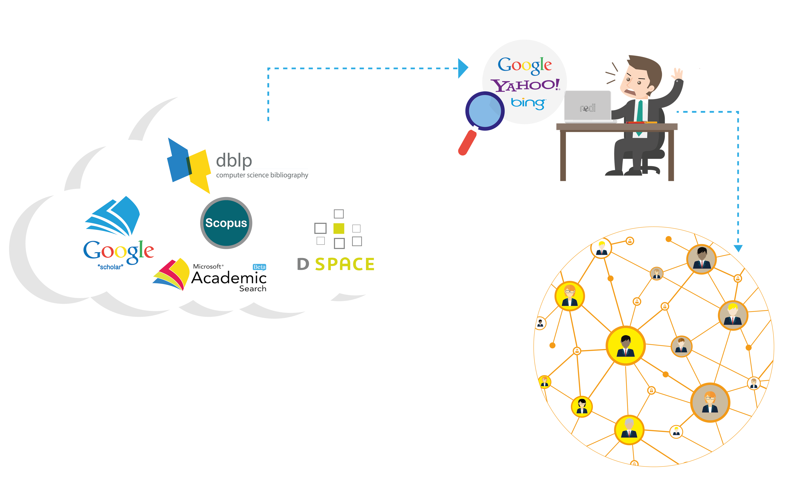
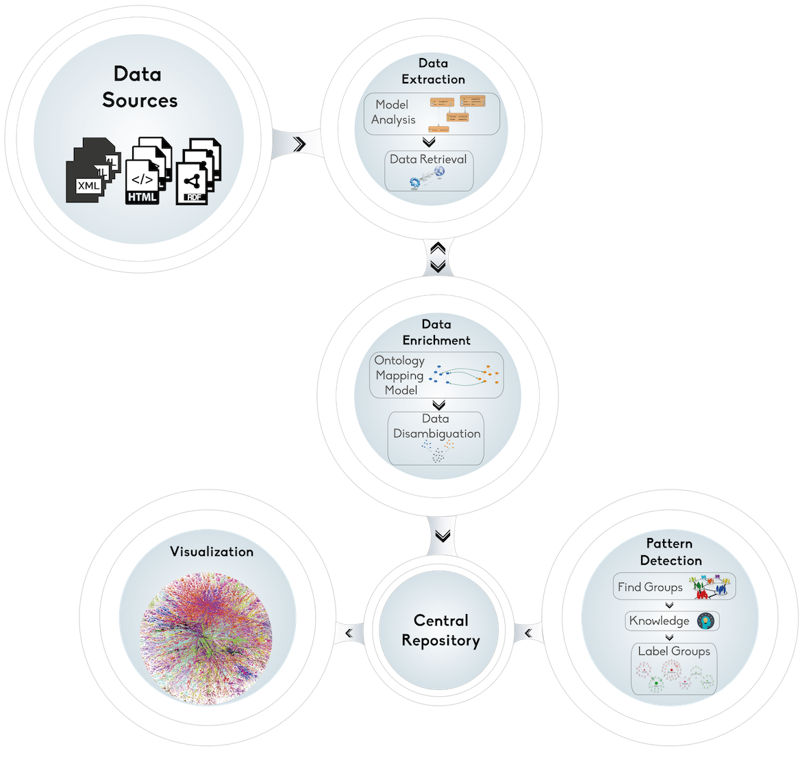
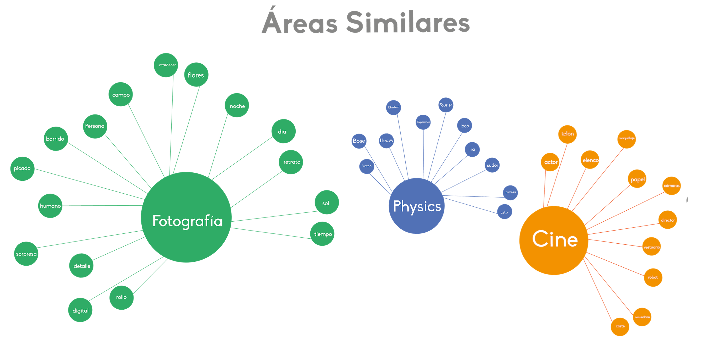
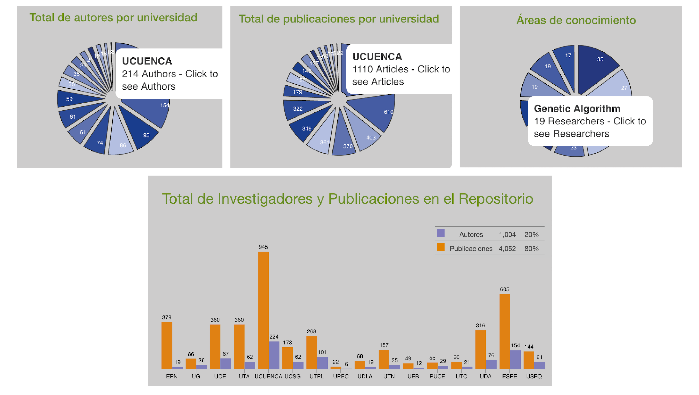

Repositorio Ecuatoriano de Investigadores
Universidad de Cuenca, Departamento de Ciencias de la Computación, Cuenca, Ecuador.
Problema

Arquitectura
Resultados


¿Más?
Conclusiones
- Aporte a la comunidad cientifíca nacional con información actualizada de investigadores que pueden trabajar en conjunto.
- Cualquier persona/institución puede hacer uso de los datos almacenados en el Repositorio Central.
- Incentivar la generación de proyectos interinstitucionales, ayuda en la asignación de recursos y generación de indicadores que pueden ser útiles para gobiernos u otras instituciones.
Agradecimientos